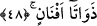

onun için taşımışlarsa daha nefsleri kendilerinden ayrılmadan hâlis cennet şarabıyla
dolu kadehi ellerine verirler. Bu kadehin üzerinde, “korkmayınız” yazılıdır” diye cevap
vermiştir.
Gariplerin hüzün ve kederi de bir gün gelir son bulur,
Gariplerin işleri de bir gün gelir takdir edilir.
Allah korkusu taşıyanlar ve onun için hüzünlenip kederlenenler için ikisi gümüş, ikisi
altından olmak üzere dört cennet vardır.
Bir hadis-i şerifte Peygamberimiz (s.a.)’in buyurduğu gibi, “İki cennet’in kapıları ve
içinde ne varsa hepsi gümüştendir ve diğer iki cennetin tabakaları ve içindeki şeyler
altındandır.”[175]
et-Te’vilâtü’n-Necmiyye adlı eserde denmiştir ki; burada şühûd makamında nefsinin
bakasından korkan kimseye işâret vardır. Çünkü, gerçek şühûd makamı meşhûd olan zât-
ı ilahîde şâhidin şahsiyetini yok eder, müşâhedenin diğer derecelerini meşhûd ile ibkâ
eder. Çünkü müşâhedenin ilk mertebelerinde zevk, lezzet yoktur. Nitekim Râsûl-i Ekrem
(s.a.) “Allahım! sana kavuşmak üzere nazar ve nûrumuzun lezzetini vermek suretiyle
bizi rızıklandır” hadis-i şerifi ile buna işâret etmiştir.[176] Bu anlamda O’nun hissinden
gayb içinde kaldığı zaman, Hz. Aişe’ye (r.a.); “Ey Hümeyrâ, tebliğ ve irşad için
benimle konuş” buyururdu. Âyet-i kerîmedeki, “Cennetân,” meşhûd nimetinde fânî olma
ve meşhûd nimetiyle bâkî olma cenneti demektir. Fenâ fillah nimetiyle, bakâ billah
nimetlerinden, Rabbinizin nimetlerinden hangisini yalanlayabilirsiniz?
48. İki cennet de çeşit çeşit ağaçlarla doludur.
İki cennetin vasıflarının anlatımıdır. Sıfat olan bu âyet-i kerîme ile 48. âyet-i kerîme
arasına giren âyet itiraz cümlesi olup mevsûf olan cenneti veya onun sıfatını yalanlamak
ve ayıplanacak bir iş olduğuna dikkat çekmek içindir.
“
/Efnân” kelimesi, “nevi, çeşit” anlamındadır. Yâni iki cennet çeşit çeşit ağaçlar
ve meyvelerle doludur, mânâsına gelir. Yahut, “fenen” kelimesi, uzunlamasına dümdüz
dal veya ağacın dallarından ayrılan budak, filiz, demektir ki, âyet-i kerîmenin anlamı;
ağacın dallarından fışkıran dallar, budaklarla doludur, şeklindedir. Yapraklar ve
meyvelerle donandığı, gölge saldığı, meyveler derlenip toplandığı için özellikle dallar
zikredilmiştir. Yâni cenneti vasfetmek, sanki “gölgeler, meyveler ve yapraklarla
donanmış dallarla, dolu” demiş gibi kinâye yoluyla o güzellikleri hatırlatmaktır.